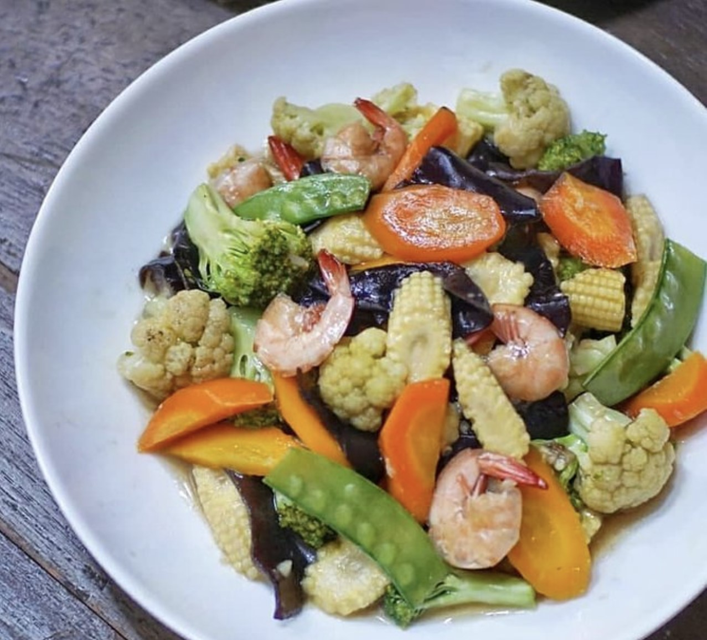

Bahan
- 10 udang
- 1 wortel besar
- 1 brokoli kecil
- 1/2 kembang kol
- Sedikit jamur kuping
- Sedikit kapri
- Sedikit jagung muda
Cara Pembuatan
- Cuci sayur dan potong-potong
- Tumis bawang putih sampai wangi, masukkan jahe cincang dan udang sampai berubah warna
- Masukkan wortel dan air secukupnya, lalu semua bumbu lainnya, cek rasa
- Masukkan semua sayuran lainnya kecuali brokoli. Jangan masak terlalu lama, kira-kira sayur sudah setengah matang.
- Terakhir masukkan brokoli aduk sebentar lalu larutan maizena. Aduk sampai air berubah agak kental, matikan api.